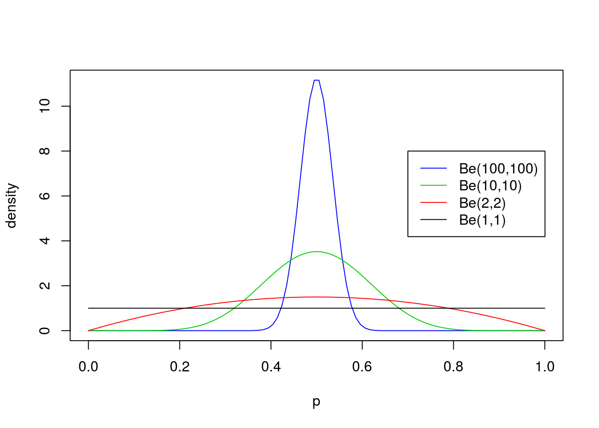
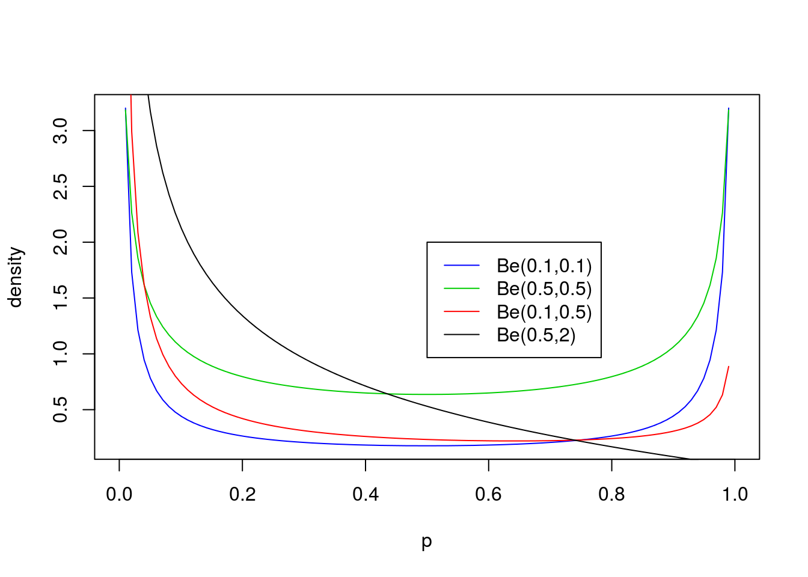

Last updated: 2020-01-11
Checks: 7 0
Knit directory: fiveMinuteStats/analysis/
This reproducible R Markdown analysis was created with workflowr (version 1.6.0). The Checks tab describes the reproducibility checks that were applied when the results were created. The Past versions tab lists the development history.
Great! Since the R Markdown file has been committed to the Git repository, you know the exact version of the code that produced these results.
Great job! The global environment was empty. Objects defined in the global environment can affect the analysis in your R Markdown file in unknown ways. For reproduciblity it’s best to always run the code in an empty environment.
The command set.seed(12345) was run prior to running the code in the R Markdown file. Setting a seed ensures that any results that rely on randomness, e.g. subsampling or permutations, are reproducible.
Great job! Recording the operating system, R version, and package versions is critical for reproducibility.
Nice! There were no cached chunks for this analysis, so you can be confident that you successfully produced the results during this run.
Great job! Using relative paths to the files within your workflowr project makes it easier to run your code on other machines.
Great! You are using Git for version control. Tracking code development and connecting the code version to the results is critical for reproducibility. The version displayed above was the version of the Git repository at the time these results were generated.
Note that you need to be careful to ensure that all relevant files for the analysis have been committed to Git prior to generating the results (you can use wflow_publish or wflow_git_commit). workflowr only checks the R Markdown file, but you know if there are other scripts or data files that it depends on. Below is the status of the Git repository when the results were generated:
Ignored files:
Ignored: .Rhistory
Ignored: .Rproj.user/
Ignored: analysis/.Rhistory
Ignored: analysis/bernoulli_poisson_process_cache/
Untracked files:
Untracked: _workflowr.yml
Untracked: analysis/CI.Rmd
Untracked: analysis/gibbs_structure.Rmd
Untracked: analysis/libs/
Untracked: analysis/results.Rmd
Untracked: analysis/shiny/tester/
Note that any generated files, e.g. HTML, png, CSS, etc., are not included in this status report because it is ok for generated content to have uncommitted changes.
These are the previous versions of the R Markdown and HTML files. If you’ve configured a remote Git repository (see ?wflow_git_remote), click on the hyperlinks in the table below to view them.
| File | Version | Author | Date | Message |
|---|---|---|---|---|
| Rmd | 3fab888 | Matthew Stephens | 2020-01-11 | workflowr::wflow_publish(“analysis/beta.Rmd”) |
| html | 5f62ee6 | Matthew Stephens | 2019-03-31 | Build site. |
| Rmd | 0cd28bd | Matthew Stephens | 2019-03-31 | workflowr::wflow_publish(all = TRUE) |
| html | 34bcc51 | John Blischak | 2017-03-06 | Build site. |
| Rmd | 5fbc8b5 | John Blischak | 2017-03-06 | Update workflowr project with wflow_update (version 0.4.0). |
| html | 8e61683 | Marcus Davy | 2017-03-03 | rendered html using wflow_build(all=TRUE) |
| html | 89b7296 | stephens999 | 2017-01-25 | Build site. |
| Rmd | 9cd56b5 | stephens999 | 2017-01-25 | Files commited by wflow_commit. |
The purpose of this vignette is to introduce the Beta distribution. You should be familiar with basic concepts related to distributions before - e.g. maybe you have come across the normal distribution and a uniform distribution before, and understand what it would mean to talk about their mean, variance and density.
If you want more details you could look at Wikipedia.
The Beta distribution is a distribution on the interval \([0,1]\). Probably you have come across the \(U[0,1]\) distribution before: the uniform distribution on \([0,1]\). You can think of the Beta distribution as a generalization of this that allows for some simple non-uniform distributions for values between 0 and 1.
The Beta distribution has two parameters, which we will call \(a\) and \(b\). These two parameters determine the shape of the Beta distributions (just as the mean and variance determine the shape of the normal distribution).
Following the usual convention, we will write \(X \sim Be(a,b)\) as shorthand for “\(X\) has a Beta distribution with parameters \(a\) and \(b\)”.
If \(X \sim Be(a,b)\) then the density of \(X\) is: \[f_X(x) = \frac{1}{B(a,b)} x^{a-1}(1-x)^{b-1} \qquad (x \in [0,1]).\]
For those of you that are interested, \(B(a,b)\) is known as the “beta function” and is given by the integral \[B(a,b) = \int_0^1 x^{a-1} (1-x)^{b-1} \,dx.\] This is where the beta distribution gets its name: its density involves the beta function. However, for this introduction you do not have to worry very much about what \(B(a,b)\) is: think of it as a constant (in that it does not depend on \(x\)), that is included so that the density integrates to 1, as all densities must.
Because the Beta distribution is widely used, R has the built in function dbeta to compute this density. We will use this to look at some examples of the Beta distribution below.
First we will look at some examples for \(a=b\), with both \(\geq 1\):
p = seq(0,1, length=100)
plot(p, dbeta(p, 100, 100), ylab="density", type ="l", col=4)
lines(p, dbeta(p, 10, 10), type ="l", col=3)
lines(p, dbeta(p, 2, 2), col=2)
lines(p, dbeta(p, 1, 1), col=1)
legend(0.7,8, c("Be(100,100)","Be(10,10)","Be(2,2)", "Be(1,1)"),lty=c(1,1,1,1),col=c(4,3,2,1))
Now non-equal values of \(a\) and \(b\) with both \(\geq 1\):
p = seq(0,1, length=100)
plot(p, dbeta(p, 900, 100), ylab="density", type ="l", col=4)
lines(p, dbeta(p, 90, 10), type ="l", col=3)
lines(p, dbeta(p, 30, 70), col=2)
lines(p, dbeta(p, 3, 7), col=1)
legend(0.2,30, c("Be(900,100)","Be(90,10)","Be(30,70)", "Be(3,7)"),lty=c(1,1,1,1),col=c(4,3,2,1))
From these examples you should note the following:
The parameters \(a\) and \(b\) can also be less than 1, but the distribution in this case starts to have a different kind of shape. Specifically if \(a<1\) then there is a peak at 0, and if \(b<1\) then there is a peak at 1 (so if both are \(<1\) then the distribution is U-shaped). Here are some examples:
p = seq(0,1, length=100)
plot(p, dbeta(p, 0.1, 0.1), ylim=c(0,3),ylab="density", type ="l", col=4)
lines(p, dbeta(p, 0.5, 0.5), type ="l", col=3)
lines(p, dbeta(p, 0.1, 0.5), col=2)
lines(p, dbeta(p, 0.5, 2), col=1)
legend(0.5,2, c("Be(0.1,0.1)","Be(0.5,0.5)","Be(0.1,0.5)", "Be(0.5,2)"),lty=c(1,1,1,1),col=c(4,3,2,1))
dbeta.
sessionInfo()R version 3.6.0 (2019-04-26)
Platform: x86_64-apple-darwin15.6.0 (64-bit)
Running under: macOS Mojave 10.14.6
Matrix products: default
BLAS: /Library/Frameworks/R.framework/Versions/3.6/Resources/lib/libRblas.0.dylib
LAPACK: /Library/Frameworks/R.framework/Versions/3.6/Resources/lib/libRlapack.dylib
locale:
[1] en_US.UTF-8/en_US.UTF-8/en_US.UTF-8/C/en_US.UTF-8/en_US.UTF-8
attached base packages:
[1] stats graphics grDevices utils datasets methods base
loaded via a namespace (and not attached):
[1] workflowr_1.6.0 Rcpp_1.0.3 rprojroot_1.3-2 digest_0.6.23
[5] later_1.0.0 R6_2.4.1 backports_1.1.5 git2r_0.26.1
[9] magrittr_1.5 evaluate_0.14 stringi_1.4.3 rlang_0.4.2
[13] fs_1.3.1 promises_1.1.0 whisker_0.4 rmarkdown_1.18
[17] tools_3.6.0 stringr_1.4.0 glue_1.3.1 httpuv_1.5.2
[21] xfun_0.11 yaml_2.2.0 compiler_3.6.0 htmltools_0.4.0
[25] knitr_1.26 This site was created with R Markdown